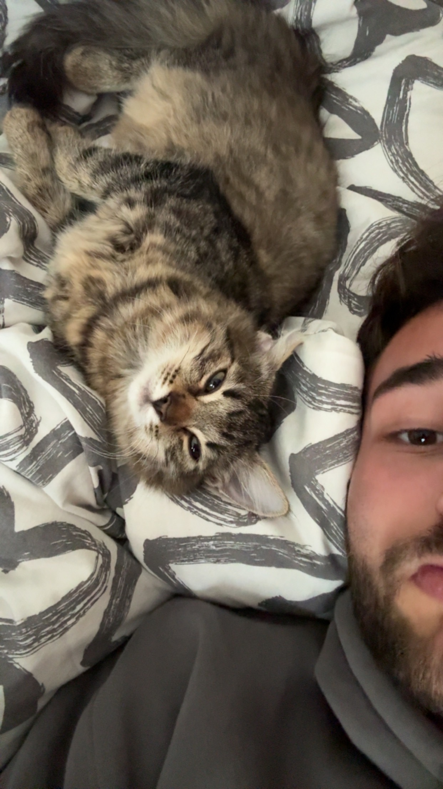
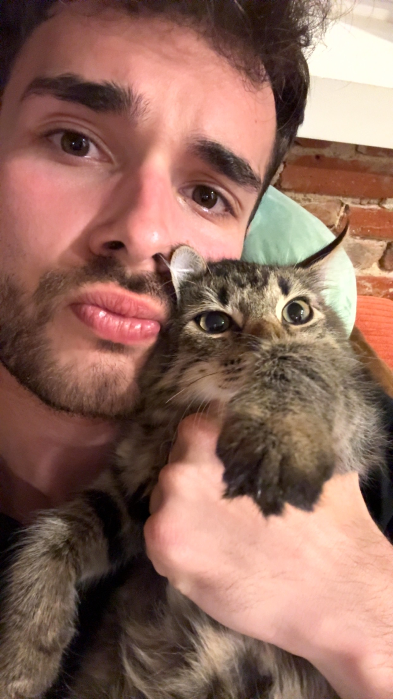

I am a student in my third year and decided to get a cat. Along with my friend, we went to a shelter and adopted Pookie. He has a lovely personality, does not meow a lot and uses the litter perfectly.


He is pretty calm, but a kitten will always want to play. He needs a lot of toys, since he destroys them very fast. He can be alone at home without meowing or experiencing anxiety, which makes it easier for us.